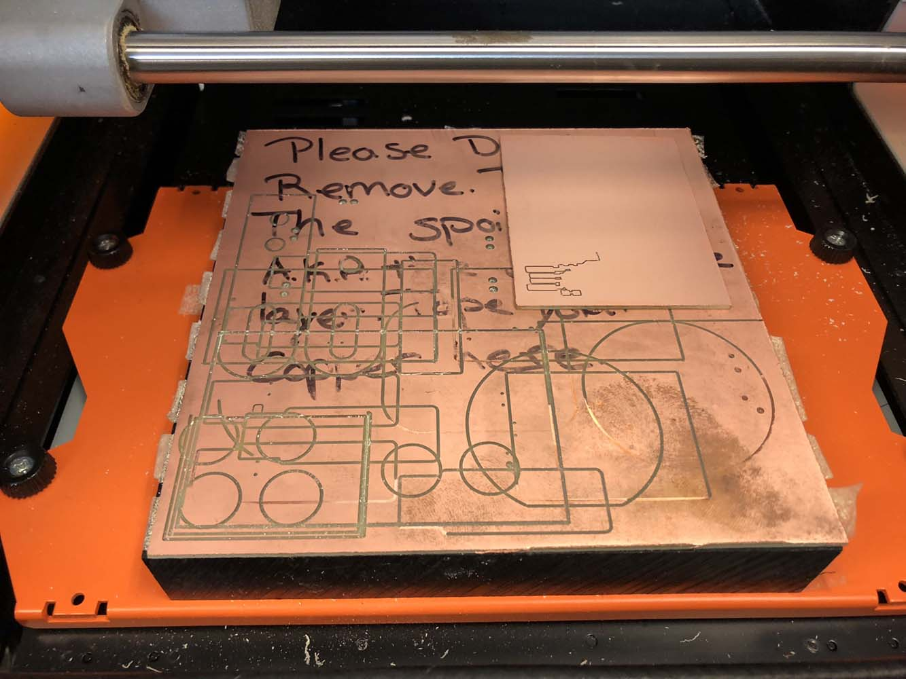
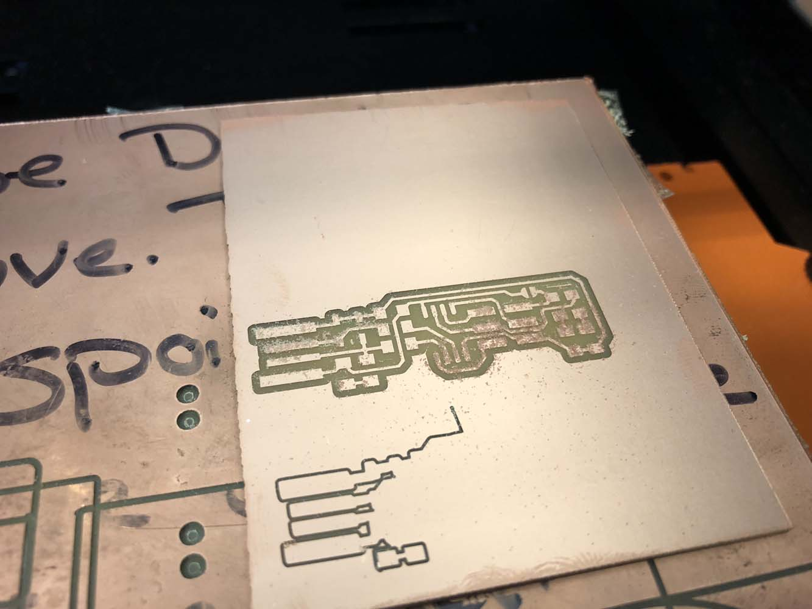
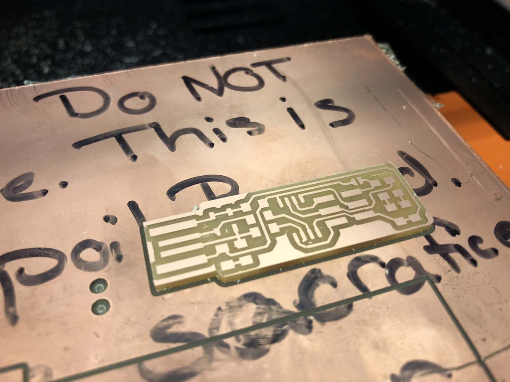
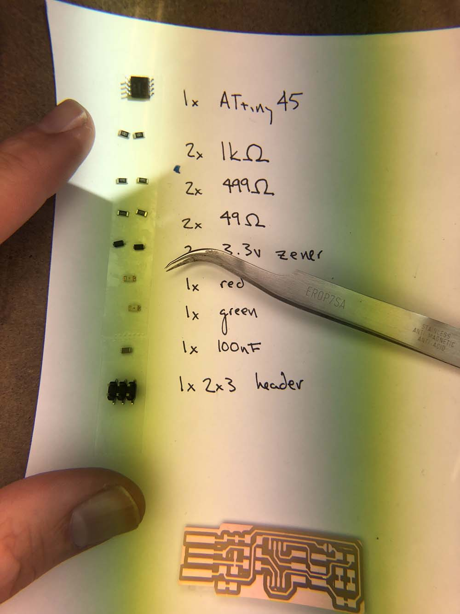
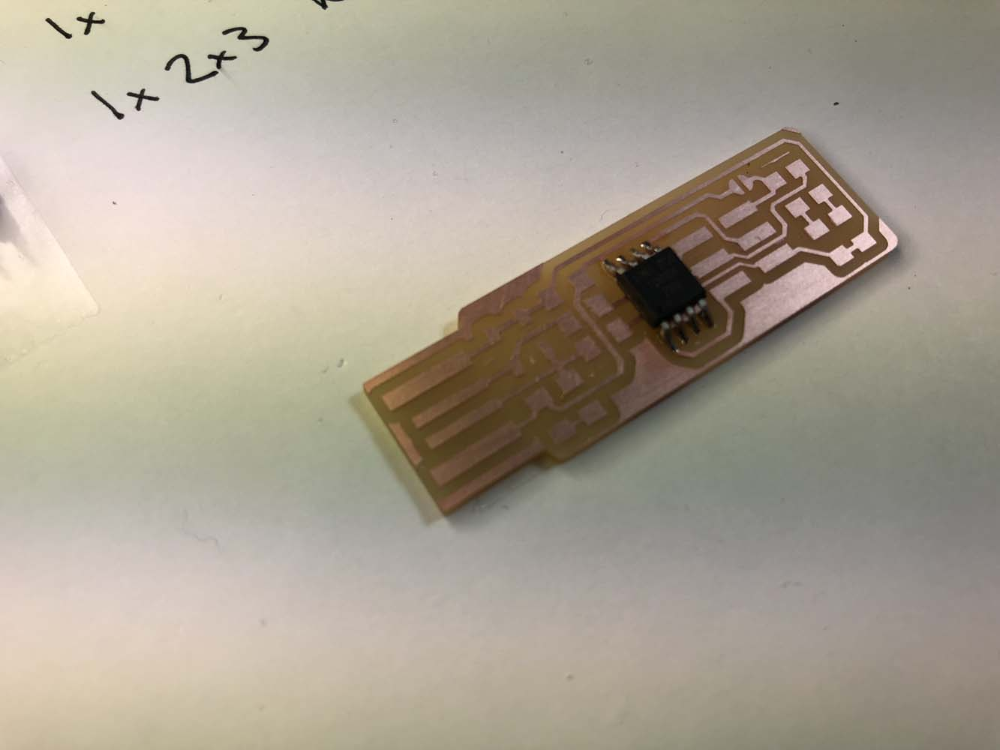
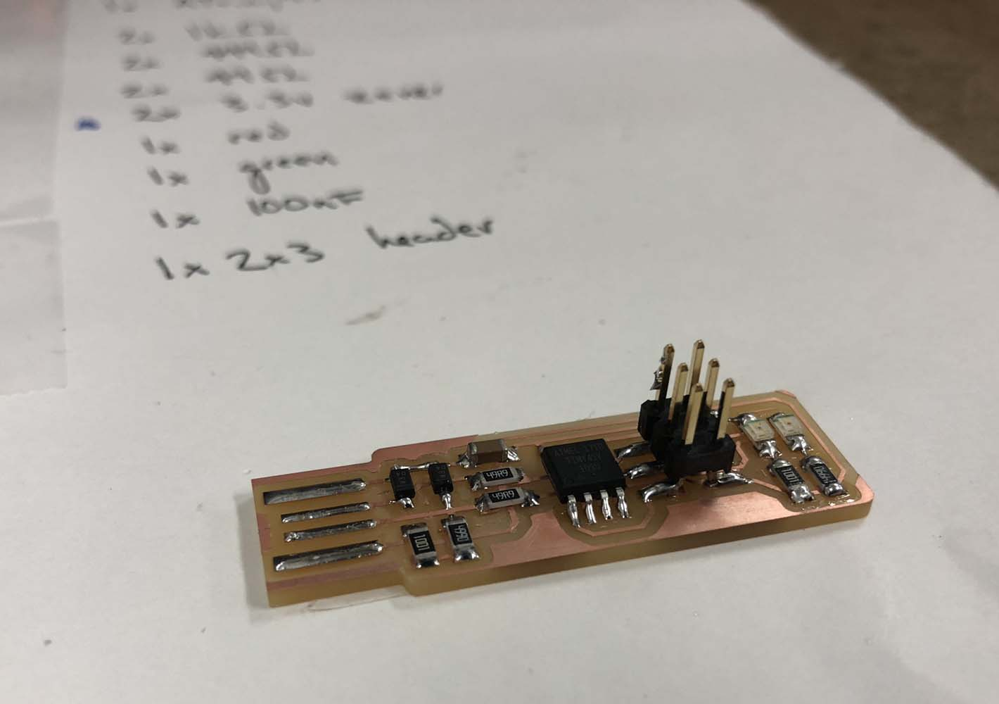
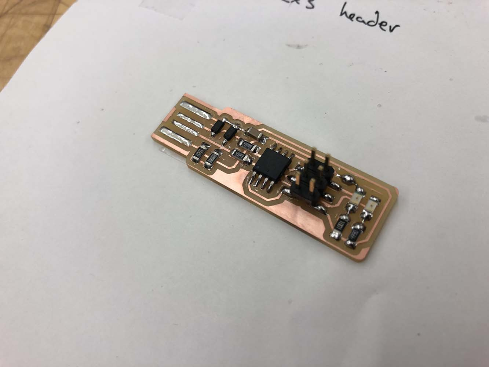

electronics production
The assignment this week was to build a programmer for an ATtiny. It was a two step process, first milling the circuit board and then soldering on the components.

Milling the circuit board took two passes. The first was with a 1⁄64” endmill to mill the traces, and the second with a 1⁄32” endmill to cut the board out of the blank. In general, the process was smooth, though my board came loose on my first attempt. Although I had used a substantial amount of double stick tape on the back of the board, I had put it on a portion of the sacrificial layer that had a lot of cuts on it, which seemed to prevent the blank from sticking.

For my second attempt, I reinforced the double stick tape, and moved the blank to a smoother part of the sacrificial layer, and the board stayed in place.

The double stick tape did its job a little too well–it took quite a bit of work to pry the board off of the mill.
Next, it was time to solder. I hadn’t done this before, so I practiced on a scrap set of traces before moving on to my board. First, I found all of the pieces and attached them to a sheet of paper with double stick tape to keep track of everything.

Starting with the ATtiny and then moving on to the smaller components from shortest to tallest, I soldered the components onto the board.


I didn’t notice until taking this photo that I had gotten a bit of solder on the header, so I went back to remove it.
